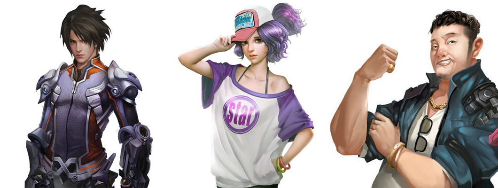

Буря Звёздной Войны
В далеком будущем империи человечества охватили всю галактику, и великолепная планета Земля превратилась в захолустье на окраине.
В азиатском городе Шанцзинь, мечты Ван Чжэна стать пилотом меха рухнули, когда на вступительном экзамене в колледже его генетическая оценка оказалась равной двадцати восьми, что едва ли выше, чем у животных.
Что еще хуже, людям казалось, что он пытался покончить жизнь самоубийством, после того, как оказался отвергнутым красотками-однокурсницами.
В этот момент, ближайший к его семье человек, старик в книжном магазине через дорогу, пропал без вести, оставив ему только таинственный подарок на день рождения.
Так начинвется путь Ван Чжэна к становлению супер солдатом меха.
Ван Чжэн, маленькая Ши, Янь Сяосу лучший друг Вана.
Буря Вооружений. Приквел Бури Звёздной Войны!
Ван Дун с нетерпением ждёт начала своей студенческой жизни – девушки, вечеринки и жизнь в общаге – всё, о чём он мечтал. Но вместо письма о зачислении он получает билет на планету Нортон и контракт с Конфедерацией, как космический колонист. Вскоре после его прибытия заги наводнили планету и уничтожили всю её защиту в считанные секунды. Ван Дуна на Нортоне ждала не только невыносимая окружающая среда – гравитация на планете была в пять раз выше, чем на земле. Помимо этого его ждали рои насекомых, постоянный голод, жажда и опустошение...
Отважьтесь открыть для себя Бурю Вооружений, откройте секреты, таящиеся в загадочных космических кристаллах и встретьте легендарных Воинов Клинка с могущественной техникой владения мечом: «Ультимативная Техника Клинка: Сила 256 Ядерных Геномов».
Честный и скромный робот низкого класса и призрак, который всегда несёт чушь, вместе объединились с Ван Дуном в битве за выживание вопреки всему.
Арт с Ван Дуном справа.
Я Запечатаю Небеса
Эта история берет начало меж восьмой и девятой горой. Она о несостоявшемся юном ученом по имени Мэн Хао, которого заставили вступить в Секту Бессмертных Практиков. Мир Культивации, где сильный поедает слабого, где господствует закон джунглей. Мэн Хао должен приспособиться к новому миру или погибнуть. Однако он не забыл идеи даосизма и конфуцианства на которых был воспитан. Это вкупе с твердым характером открывает для него путь истинного героя. Что же значит «Запечатать Небеса?» Ответ на это вы можете получить только вместе с Мэн Хао!
Мэн Хао под личностью Фан Му и Сюй Цин.